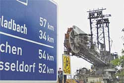
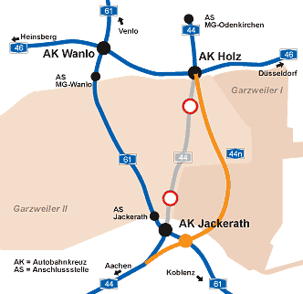

Eine Autobahn weicht Garzweiler II
Wo Braunkohle gewonnen wird, muss selbst das Autobahnnetz rund um das Abbaugebiet neu geordnet, verstärkt oder verlegt werden. Das in NRW in diesem Umfang einmalige Projekt A44/A61/A46 am Rande der Ballungsräume Düsseldorf und Köln ist eine Kooperation zwischen dem Landesbetrieb Straßenbau NRW und dem Energieunternehmen RWE Power AG.
A44 / A61
Die A44 zwischen den Autobahnkreuzen Holz und Jackerath musste den Abbaubaggern des Braunkohletagebaus "Garzweiler II" Platz machen. Doch bevor das A44-Teilstück vom Autobahnnetz abgehängt werden konnte, bekam die A61 breitere Schultern: Auf knapp zehn Kilometern wurde der Autobahn A61 in jeder Fahrrichtung ein weiterer Fahrstreifen hinzugefügt. Damit war sie nun gerüstet, den Verkehr der weichenden A44 aufzunehmen.
A44n
Die neue Trasse der A44 wird durchschnittlich um etwa einen Kilometer nach Osten verschobenen und soll ab dem Jahr 2017 die Autobahnkreuze Jackerath und Holz verbinden. Die A44 wird zwischen dem Anschluss an die bestehende A44 nördlich von Titz und einem neu zu errichtendem Autobahnkreuz mit der A61 östlich des heutigen Autobahnkreuz Jackerath vierstreifig und ab diesem neuen Kreuz bis zum bestehenden Anknüpfungspunkt Autobahnkreuz Holz sechsstreifig ausgebaut werden. Baubeginn war der 30. Mai 2012.
A46
Um das Jahr 2017 herum wird die A61 vom weiter fortschreitenden Tagebau in Anspruch genommen. Bis dahin ist neben der Errichtung der A44n auch die Erweiterung der A46 zwischen den Autobahnkreuzen Wanlo und Holz von vier auf sechs Fahrstreifen notwendig. Von der A46 müssen in der Zeit der Unterbrechung der A61 die Umleitungsverkehre vom Autobahnkreuz Wanlo über das Autobahnkreuz Holz zum Autobahnkreuz Jackerath aufgenommen werden.
Lärmschutz
Mit der Verbreiterung der A46 und dem Neubau der A44n wird auch der Lärmschutz verbessert. So werden beispielsweise die betroffenen Gebäude der Ortslage Jackerath durch die Errichtung eines 3,50 Meter hohen Lärmschutzwalles vollständig geschützt. Die Immissionsgrenzwerte der Gebäude im Gut Kaiskorb in unmittelbarer Nähe zum geplanten Autobahnkreuz Jackerath werden durch den Bau einer Läermschutzwall/-wandkombination im Tageszeitraum eingehalten. Ein völliger Schutz der Gebäude durch aktive Lärmschutzmaßnahmen ist aus technisch-konstruktiven Gründen und aus Kosten-Nutzen-Erwägungen nicht möglich. Die geringen Restbetroffenheiten in der Nacht werden durch passive Lärmschutzmaßnahmen an den Gebäuden ausgeglichen.
Die Ortslage Hochneukirch im Bereich der A46 zwischen Autobahnkreuz Wanlo und Autobahnkreuz Holz wird durch den Einbau eines Offenporigen Fahrbahnbelages und durch die Erhöhung der bereits vorhandenen Lärmschutzanlagen vollständig geschützt.
Da im Jahr 2035 die Wiederherstellung der A61 erfolgt, kann aufgrund einer zu erwartenden Reduzierung der Verkehrsmengen auf der A46 zwischen dem Autobahnkreuz Wanlo und dem Autobahnkreuz Holz mit einer deutlichen Abnahme der Lärmimmission gerechnet werden. Durch die Nutzung sowohl der A44n zwischen Autobahnkreuz Jackerath und Autobahnkreuz Holz als auch der A61 zwischen Autobahnkreuz Jackerath und Autobahnkreuz Wanlo ist von einer Halbierung der Verkehrsmenge auf der A46 auszugehen, was einer Reduzierung der Lärmemission um 3 dB(A) entspricht.